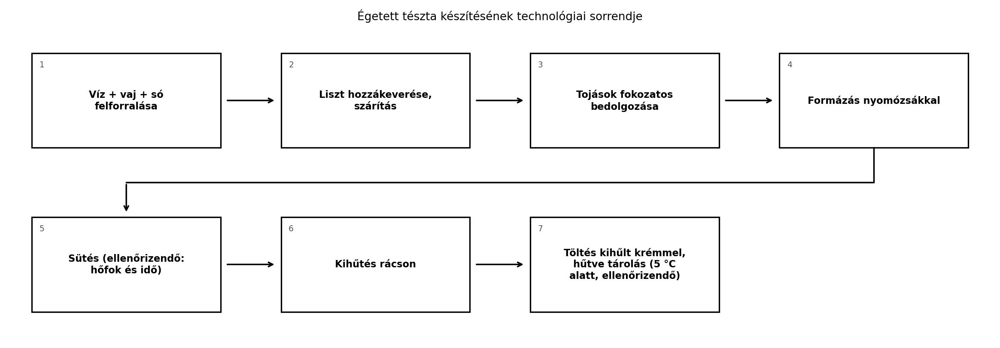

Egy étterem konyháján a hideg desszertpultban képviselőfánk vár töltésre, a cukrászati előkészítőben piskótalap hűl somlói galuskához, a büféreggelihez pedig leveles vajas tésztából sült sajtos rúd készül. Mindhárom tészta egészen más elven lazul, mégis mindegyik a vendéglátó konyha alapterméke. Ha a szakács nem érti, miért nő meg a piskóta, miért válik szét a leveles tészta, és miért fúvódik fel az égetett tészta, akkor a sütő előtt csak találgatni fog.
Ebben az alfejezetben a három nagy tésztacsoportot tanuljuk meg: a felvert tésztát, a vajas (leveles) tésztát és az égetett tésztát. Mindegyik alapként szolgál édes és sós, hideg és meleg vendéglátó-ipari készítményekhez is.
A piskótát a felvert tojásba kevert levegő lazítja. A vajas leveles tésztát a hajtogatott vajrétegek közé szorult gőz választja szét. Az égetett tésztát szintén gőz fújja fel, de ott a forró vajas vízben megfőzött (égetett) tésztába legfeljebb annyi tojás kerül, amennyit a tészta még elbír; sütés közben a víz gőzzé alakul.
Az égetett tészta technológiai sorrendjét a következő folyamatábra mutatja:

A tojás és a tej jelenléte miatt mindhárom tésztánál az élelmiszer-biztonsági szabályok nem utólagos kiegészítések, hanem a technológia részei.
Definíció. A felvert tészta olyan tojástartalmú tészta, amelyet a tojás vagy tojásfehérje felverésével bevitt levegő, ritkábban az egész tojás melegen tartott habosítása lazít. Ide tartozik a piskóta, a piskótatekercs és a somlói alap.
Definíció. A vajas leveles tészta hidegen készített tészta, amelyben vajréteget zárunk a lisztes-vizes alaptésztába, majd a tésztát többször kinyújtjuk és hajtogatjuk. Sütéskor a vajban lévő víz gőzzé alakul, és a vékony tészta- és vajrétegek közé feszülve levelessé válik a tészta.
Definíció. Az égetett tészta olyan tészta, amelyet úgy készítünk, hogy vizet vajjal felforralunk, beleforraljuk a lisztet, majd a tésztát a tűzről levéve tojással fokozatosan eldolgozzuk. Forró sütőben a tészta üregesre fúvódik; ebből készül a képviselőfánk, a profiterol és a spanyol csúrosz is.
Szabály. A tojásos tésztákat mindig frissen, gyorsan kell feldolgozni és hőkezelni. A nyers tojásos masszát nem szabad hosszan szobahőmérsékleten tartani, mert a baktériumok gyorsan szaporodhatnak. A kész, melegen töltött krémeket pedig gyorsan vissza kell hűteni.
Allergén. A piskóta alapmérleg szerint glutént és tojást tartalmaz. A leveles vajas tészta glutént és tejallergént (vaj) tartalmaz, tojást általában nem. Az égetett tészta glutént, tojást és tejet is tartalmazhat, a vaníliakrémmel töltött változat pedig glutént, tojást és tejet egyaránt. A töltött fánkban előfordulhat diófélékből készült krém vagy mandulás díszítés is, ezért a vendég tájékoztatása mindig pontos, írásos legyen.
Technológia. A klasszikus piskótatésztában a tojást kettéválasztjuk. A tojásfehérjét csipet sóval vagy néhány csepp citromlével kemény habbá verjük. A tojássárgáját a cukorral fehéredésig, habosra keverjük. A kettőt óvatosan összeforgatjuk, majd a finomlisztet (BL55 – ellenőrizendő: liszttípus) kanalanként, alulról felfelé mozdulattal a masszába forgatjuk. A tésztát sütőpapírral bélelt tepsibe simítjuk, és előmelegített sütőben 170–180 °C-on készre sütjük (ellenőrizendő: üzemi sütő hőfoka). Az ajtót az első 15 percben nem nyitogatjuk, mert a tészta a levegőtől összeeshet.
Hiba. A leggyakoribb piskótahiba az összeesett, tömör piskóta. Oka lehet a liszt túl erős keverése, a sütő hideg indulása, a sütőajtó korai kinyitása vagy a fehérjehab túlverése, amely száraz, szemcsés lett, és elvesztette tartóerejét. A megelőzés: a lisztet csak addig forgatjuk, amíg éppen elkeveredik; a sütőt előmelegítjük; a fehérjét addig verjük, amíg fényes, csúcsosan álló habot kapunk.
Piskótatekercs. A piskótatekercshez vékony, téglalap alakú lapot sütünk. A forró lapot azonnal cukrozott konyharuhára borítjuk, a sütőpapírt lehúzzuk, a lapot a ruhával együtt lazán feltekerjük, és így hűtjük ki. Ha a lapot forrón nem tekerjük fel, kihűlve megreped. A kihűlt tekercset ízesített tejszínnel, gyümölcsdarával vagy főzött krémmel töltjük.
A feltekerés sorrendje a képsoron követhető: forró lap (1.) – cukrozott ruhára borítás (2.) – a sütőpapír lehúzása (3.) – lazán feltekerve kihűtés (4.) – kitekerés, töltés, visszatekerés ruha nélkül (5.).
A kulcs a 4. kép: a lap melegen veszi fel a tekercsformát, ezért kihűlve már nem reped meg (6. kép: a kihűlt, ki nem tekert lap törik). A krémes vagy tejszínes töltelékű tekercset töltés után hűtve tárold. A HTML-kiadásban a lépéseket egyenként lejátszhatod.
Somlói alap. A somlói galuskához háromféle vékony piskótalapot sütünk: natúr, kakaós és diós lapot. A kakaóport a liszt egy részével keverten, a diót finomra darálva adjuk a tésztához. A kihűlt lapokat felkockázzuk, rumos cukorszirupba mártjuk, és vaníliás, diós vagy tejszínes rétegekkel építjük fel. A somlói alap nem önálló étel, hanem félkész elem, amelyet az üzemi HACCP-terv szerint azonnal hűteni kell.
Elv. A leveles tészta alaptésztája hideg vízből, lisztből, kevés sóból és egy kevés vajból készül. A tésztát vékonyra nyújtjuk, közepére hideg vajlapot helyezünk, a tészta széleit ráhajtjuk, majd óvatosan, egyenlő vastagságra nyújtjuk. Ezután hajtogatjuk: a tésztát gondolatban harmadoljuk, az egyik szélét középre hajtjuk, rá a másik szélét. Ez az egyszerű hajtogatás.
Folyamat. Minden hajtogatás előtt a tésztát hűtőben kell pihentetni, hogy a vaj ne olvadjon meg, és a gluténszálak is lazuljanak. A klasszikus leveles tésztánál a hajtogatást három-négy alkalommal ismétlik, közben pihentetéssel. A pontos hajtogatási szám és a pihentetési idő üzemenként változhat, ezért a receptúra és a HACCP-terv az irányadó. Azt azonban mindig el kell érni, hogy a vajrétegek vékonyak, egyenletesek és folyamatosak maradjanak.
Az egyszerű (hármas) hajtás mellett a cukrászatban a dupla (négyes, „könyv”) hajtás is használatos: a tészta két szélét középre hajtjuk, majd az egészet félbe. A hármas hajtás a vajrétegek számát megháromszorozza, a négyes megnégyszerezi; egy vajlapból három hármas hajtás után vajréteg lesz (szemléltető számolás).
A metszetek mutatják, miért fontos a hűtés: ha a vaj megolvad, a rétegek összefolynak, és a gőz nem tudja szétválasztani őket. A HTML-kiadásban a lépéseket egyenként lejátszhatod.
Higiénia. A vajas tésztát hideg helyiségben, gyorsan kell készíteni. Ha a vaj megolvad, a tészta ragacsos, nehezen nyújtható, sütéskor a vaj kifolyik, és a levelesség elvész. A nyers tésztát felhasználásig lefedve, hűtőben kell tárolni, felhasználás előtt pedig a hűtőből éppen csak annyit kell kivenni, amennyit azonnal sütni tudunk.
Sütés. A leveles tésztát forró, 200–220 °C-os sütőben kell sütni (ellenőrizendő: üzemi sütő hőfoka). A hirtelen képződő gőz felnyitja a rétegeket. Ha a sütő hőmérséklete alacsony, a vaj lassan olvad ki, a tészta zsíros, tömör lesz. A sült lapot sütőpapíron kell kiemelni, mert a forró vaj miatt a tepsi alja forró és csúszós.
Technológia. Az égetett tésztához a vizet a vajjal és a sóval felforraljuk. Amikor a vaj teljesen felolvadt, az átszitált lisztet egyszerre a forró folyadékba öntjük, és addig keverjük, amíg a massza az edény falától elváló, fényes gombóccá áll össze. Ezt a tésztát 1–2 percig a tűzön folyamatosan keverjük, hogy a liszt keményítője jól felduzzadjon; ezt a lépést hívjuk szárításnak. A tűzről levéve, enyhén hűlni hagyva a tojásokat egyesével, teljesen eldolgozzuk. A kész tészta fényes, sima, és a habverőről lehúzva csúcsot húz.
Kritikus pont. Az égetett tésztát forró, 180–200 °C-os sütőben kell sütni (ellenőrizendő: sütő hőfoka). Az első szakaszban a gőz felfújja; az utolsó percekben a sütő hőfokát mérsékelhetjük, hogy a tészta szikkadjon, ropogós legyen. A sütő ajtaját az első 15–20 percben itt sem nyitogatjuk. A kész fánk világos aranybarna, üreges, kopogtatva kongó hangot ad. A töltetlen fánkot rácson hűtjük, majd tiszta, zárt dobozban, hűtve tároljuk.
Változatok. A képviselőfánkot főzött vaníliakrémmel vagy tejszínnel töltjük; a tetejét porcukorral, csokoládémázzal, karamellszálakkal díszíthetjük. A profiterol kisebb, gömbölyű fánk, amelyet leggyakrabban fagylalttal, tejszínhabbal és meleg csokoládémártással tálalnak. A csúrosz égetett tésztából, csillagcsöves nyomózsákkal kinyomott, olajban sült desszert; a bő olajos sütés szabályait itt is be kell tartani. A bő olajos sütést csak akkor gyakorold, ha a leírt biztonsági feltételek adottak.
Feladat. A piskótalap technológiai lapja 10 adagra 6 tojást, 120 g cukrot és 120 g lisztet ír elő. Mennyi kell 35 adaghoz?
Adott. 10 adag → 6 tojás, 120 g cukor, 120 g liszt. Keresett: 35 adag.
Számítás. Szorzószám:
Cukor:
Tojás:
Liszt:
Ellenőrzés. Az arányok megmaradtak: 35 adag a 10 adag 3,5-szerese, minden mennyiség is 3,5-szeres. Az eredmény: 21 tojás, 420 g cukor, 420 g liszt. A tojás darabszáma itt egész (21 db); tört eredménynél a tojás tömegéhez igazítunk.
Adagszám és adagsúly: 10 adag; adagonként 2 db töltött fánk, kész tömeg kb. 100 g (a töltés mennyiségétől függően; ellenőrizendő: üzemi receptúra).
Anyaghányad-táblázat
| Nyersanyag | Mennyiség 10 adagra | Megjegyzés |
|---|---|---|
| Víz | 250 ml | a tésztához |
| Vaj | 100 g | 82%-os vaj (ellenőrizendő: minőség) |
| Só | 2 g | a tésztához |
| BL55 finomliszt | 150 g | glutén, szitálva |
| Tojás | 4 db | L-es, kb. 200 g tiszta tojáslé (átlagtömeg ellenőrizendő) |
| Tej | 500 ml | a krémhez |
| Tojássárgája | 4 db | a krémhez |
| Cukor | 80 g | a krémhez |
| Étkezési keményítő | 40 g | a krémhez |
| Vaj | 20 g | a krém befejezéséhez |
| Vanília | 1 rúd vagy 2 g kivonat | a krémhez |
Allergének: glutén, tojás, tej; a csokoládé- vagy diós díszítés esetén további allergének.
Eszközök: lábos, habverő, nyomózsák sima és csillagcsővel, sütőlap, sütőpapír, hűtő, maghőmérő, kanálmosó/szanitáló.
Előkészítés
Elkészítés
A 6. lépés kézi fogását és a sütés eredményét az alábbi képsor mutatja: a zsákot függőlegesen, a tepsihez közel tartod, nyomsz, majd oldalra elrántod; a halmok egyformák és egyenlő távolságra vannak.
Az 5. és a 6. kép a sütés minőségét hasonlítja össze: a jól sült fánk üreges, a fala száraz; az összeesett fánk belseje nedves, tömör – ennek oka a korán kinyitott sütőajtó vagy az alulsütés. A HTML-kiadásban a lépéseket egyenként lejátszhatod, a hibás képnél megjelenik az ok és a javítás.
A krém készítése
Kritikus pontok
Töltés és tálalás. A kihűlt fánkokat alulról vagy oldalról nyomózsákkal megtöltjük. Tálaláskor porcukorral, csokoládémázzal vagy karamellszálakkal díszítjük.
Minőségi követelmény: a fánk egyenletes, aranybarna, ropogós, üreges; a krém selymes, nem csomós; íze édes, vajas, vaníliás.
Cél: Sütőben átsült, rugalmas piskótalap készítése 10 adagra.
Eszközök és anyagok: habverő, spatula, tálak, sütőpapír, tepsi, hűtőrács; 6 tojás, 120 g cukor, 120 g liszt, csipet só.
Biztonsági korlát. A sütő forró; a tepsit csak kesztyűvel fogd. A forró piskótalap gőze megégethet, ezért a papírt óvatosan húzd le. Ezt a műveletet tankonyhán vagy oktatói felügyelettel gyakorold.
Higiéniai előkészület. Kézmosás, tiszta kötény, frissen feltört tojás. A tojás héja ne érjen a tésztához. A masszát azonnal süsd ki.
Lépések
Ellenőrzési pontok: a tészta magassága egyenletes, színe világos aranybarna, a tű száraz, a felület rugalmasan visszaugrik. Dokumentáld a hűtés kezdetét és a hűtő hőmérsékletét a HACCP-előírás szerint.
Általános követelmény. Minden tojásos tésztának jól átsültnek, kellemes illatúnak és egyenletes színűnek kell lennie. A piskóta magas, rugalmas, nem ragacsos. A leveles tészta réteges, száraz tapintású, aranybarna. Az égetett tészta fényes, ropogós felületű, belül üreges. A töltött desszerteknél a tölteléknek stabilnak kell lennie, nem szabad kifolynia.
Mérhető ellenőrzés. A piskóta tészta átsült, ha tűpróba után a tű száraz. Az égetett fánk akkor jó, ha kopogtatva kong, és a sütőből kivett darabok nem esnek össze. A leveles tésztalap magassága és rétegzettsége üzemi előírás szerint ellenőrizhető; a tömör, zsíros lap mindig hibás.
1. Hiba: a piskóta összeesett, tömör maradt.
Tünet: a sütőből kivett tészta középen behorpad, szeleteléskor
ragacsos.
Okok: a lisztet túlkeverték; a sütő nem volt előmelegítve; a
sütőajtót túl korán nyitották; a fehérjehab túl kemény, száraz
volt.
Javítás: a masszát nem lehet utólag pótolni, ezért a sütést újra
kell kezdeni. Hibaelemzésnél a fenti okokat egyenként ellenőrizni
kell.
Megelőzés: a fehérje csak addig verhető, amíg csúcsosan áll; a
lisztet éppen csak beleforgassuk; az első 15 percben ne nyissuk a
sütőt.
2. Hiba: az égetett tészta nem nőtt meg, tömör maradt.
Tünet: a fánkok laposak, belül tésztásak, nem
üregesek.
Okok: a tésztát nem forralták elég forrón; a tojást hidegen,
egyszerre adták hozzá; a tészta túl kemény vagy túl lágy lett; a sütő
alacsony hőmérsékleten indult.
Javítás: a tészta nem menthető, de a hiba megelőzhető: a lisztet
forró folyadékhoz adjuk; a tojást fokozatosan, csak annyit, amennyit a
tészta felvesz.
Megelőzés: a tészta legyen fényes, lágyan folyó, de határozott;
azonnal forró sütőbe helyezzük.
3. Hiba: a leveles tészta sütéskor zsugorodott, és nem levelesedett.
Tünet: a megsült lap alacsony, olajos, tömör.
Okok: a vaj túl meleg lett; a tésztát nem pihentették elég hidegen;
a hajtogatáskor a rétegek összetapadtak; a sütő hőmérséklete
alacsony.
Javítás: a sütő hőmérsékletét emeljük, és a következő adagnál hideg
tésztával dolgozzunk.
Megelőzés: hideg helyiség, hűtőben pihentetés, éles szélű kinyújtás,
forró sütő.
Hibaelemzési táblázat.
| Tünet | Lehetséges ok | Ellenőrzés | Javítás, megelőzés |
|---|---|---|---|
| Összeesett piskóta | liszt túlkeverése; hideg sütő | tűpróba, sütő hőfok | forgatás csak röviden; előmelegített sütő |
| Nem nőtt égetett tészta | tészta túl hideg; híg vagy kemény massza | tészta csúcsteszt; sütő hőfok | forró sütő; tojást fokozatosan |
| Zsugorodó leveles tészta | meleg vaj; nem pihentetett tészta | tészta hőmérséklete; rétegvonalak | hideg pihentetés; forró sütő |
Egy étterem délutáni előkészítőjében a tanuló szakács piskótatekercset készített. A tojásfehérjét gyorsan felverte, majd a lisztet erős, körkörös mozdulattal keverte a habba. A sütőből kivett lap elsőre szépnek látszott, de hűlés közben összeesett. A cukrász szakács megvizsgálta a masszát, és elmondta, hogy a liszt keverésével a hab nagy részét levegőtelenítette, a sütőben kialakult szerkezet pedig nem tudta megtartani a tésztát. A tanuló másodszorra alulról felfelé forgatta a lisztet, a sütő ajtaját nem nyitotta, és a lap egyenletes, rugalmas maradt. A tanulság: a felvert tésztánál nem a keverési idő, hanem a keverési technika a meghatározó.
1. feladat (A) Sorold fel a három tésztacsoport lazítási elvét, és mindegyikhez írj egy-egy étel példát.
2. feladat (A) Miért kell a leveles tésztát minden hajtogatás után hidegen pihentetni? Magyarázd el röviden.
3. feladat (B) Állítsd sorrendbe az égetett tészta
készítésének lépéseit:
a) tojás hozzáadása; b) víz és vaj felforralása; c) formázás; d) liszt
hozzáadása; e) sütés.
Írd le a helyes sorrendet.
4. feladat (B) Egy piskótatekercshez 10 adagra 6 tojás, 120 g cukor és 120 g liszt kell. Mennyi kell 24 adaghoz, ha a tojás darabszámát egészre kerekíted?
5. feladat (C) A képviselőfánk technológiai lapjában azonosítottuk a tojásos krém CCP-jét. Írj egy ellenőrzőlistát a krém hőkezelésére, hűtésére és a keresztszennyeződés megelőzésére.
6. feladat (D) Egy tanuló piskótát sütött, de a tészta a sütőből kivéve összeesett. Írj hibaelemzést: tünet, lehetséges okok, ellenőrzés, ok, javítás, megelőzés. Használd a fejezetben tanult hibaelemző táblázatot.
Önellenőrzés – válaszok
Feladatok – megoldások
1. feladat (A)
- Felvert tészta: levegő a tojáshabban; példa: piskóta.
- Vajas leveles tészta: gőz a vajrétegek között; példa: sajtos leveles
rúd.
- Égetett tészta: gőz a forró tésztában; példa: képviselőfánk.
2. feladat (A)
A hideg pihentetés azért kell, mert a vaj hidegen maradjon, ne olvadjon
a tésztába, és a gluténszálak is lazuljanak. Meleg vaj esetén a rétegek
összetapadnak, sütéskor a tészta zsugorodik, nem levelesedik.
3. feladat (B)
b) víz és vaj felforralása → d) liszt hozzáadása → a) tojás hozzáadása →
c) formázás → e) sütés.
4. feladat (B)
Szorzószám:
.
Tojás:
db.
Cukor:
g.
Liszt:
g.
5. feladat (C)
Ellenőrzőlista:
- A tojásos krém maghőmérséklete legalább 75 °C (ellenőrizendő).
- A krémet tiszta, fertőtlenített eszközökkel keverjük.
- A nyers tojásos masszát nem tartjuk melegen; azonnal főzzük.
- A kész krémet lapos, fóliával letakart tálcán gyorsan hűtjük 5 °C alá
(ellenőrizendő).
- A nyers tojás, a liszt, a tej és a kész krém eszközei elkülönülnek;
kézmosás minden fázisváltásnál.
6. feladat (D)
Tünet: a piskóta a sütőből kivéve behorpadt, szeleteléskor
ragacsos.
Lehetséges okok: a liszt túlkeverése, hideg sütő, az ajtó korai
kinyitása, túlvert vagy túl híg hab.
Ellenőrzés: a sütő hőfoka, a massza állaga keverés után, a tűpróba
eredménye.
Ok: a legvalószínűbb ok a liszt erős, körkörös keverése, ami a levegőt
kipréselte a habból.
Javítás: a tésztát nem lehet visszanyomni; új adagot kell készíteni, és
a lisztet alulról felfelé, rövid ideig forgatni.
Megelőzés: előmelegített sütő, kíméletes forgatás, a sütőajtót az első
15 percben nem nyitjuk, a fehérjét csak addig verjük, amíg fényes,
csúcsos habot kapunk.
A felvert tésztát a tojásba vert levegő lazítja; a piskótánál a tojásfehérjét és a sárgáját külön verjük fel, majd a lisztet óvatosan forgatjuk bele. A tésztát azonnal, előmelegített sütőben kell sütni, és az ajtót eleinte nem nyitogatjuk. A leveles vajas tésztát hidegen készítjük, a vajat hajtogatással zárjuk a tésztába, és sütéskor a vajban lévő víz gőze választja szét a rétegeket. A munkát gyorsan, hideg helyiségben kell végezni. Az égetett tésztát forró vaj-víz keverékbe lerántott liszttel, majd fokozatosan hozzáütött tojással készítjük; forró sütőben fúvódik üregesre. A képviselőfánk, a profiterol és a csúrosz mind ebből a tésztából készül. A tojásos tésztáknál és krémeknél a hőkezelés és a gyors hűtés élelmiszer-biztonsági követelmény. Továbbvitt eredmény. A lazítás elve a felvert és égetett tésztákban (levegő és gőz térfogatnövelő hatása) a Felfújtak és pudingok alfejezetben tér vissza, ahol a felvert tojáshab és a gőz közös munkáját használjuk.
A technológiai lapok anyaghányadai tanulási példák; az üzemi
receptúra, a hivatalos anyaghányad-gyűjtemény és a HACCP-terv a mérvadó.
A sütő hőfoka, a sütési idő, a tojás átlagtömege, a liszt típusa, a krém
hőkezelési határa, a hűtési hőmérséklet és a tárolási idő üzemenként
változhat, ezért ezeket jelöltük:
(ellenőrizendő: üzemi gyakorlat, NÉBIH-útmutató, HACCP-terv).
Az allergének felsorolása az 1169/2011/EU rendelet II. melléklete
alapján ellenőrizendő a kiadás előtt.